Overview
In this project I implemented a full NeRF-style pipeline, starting from phone camera calibration and 3D pose estimation, and ending with neural fields that render novel views of both the provided Lego dataset and my own captured object.
Part 0: Data Capture and Camera Calibration
Part 0.1: ArUco Camera Calibration
I began by calibrating my phone camera using the provided ArUco board. I took multiple photos of the
board from different orientations and positions, making sure the tag grid covered most of the frame
and was not always centered. For each image, I used cv2.aruco to detect tags, recovered
the 3D corner locations using the known tag layout, and called cv2.calibrateCamera to estimate:
- The intrinsic matrix \(K\) (focal lengths and principal point).
- Lens distortion coefficients \((k_1,k_2,p_1,p_2,k_3)\).
- Per-image extrinsics \((R_i, t_i)\).
Conceptually, I solve for \(K\) and distortion parameters so that reprojected corners \(\hat{\mathbf{u}} = \Pi(K, R_i, t_i, \mathbf{X})\) are as close as possible to the detected image corners \(\mathbf{u}\), minimizing the reprojection error: \[ \frac{1}{N}\sum_i \|\mathbf{u}_i - \hat{\mathbf{u}}_i\|^2. \] These intrinsics are reused when building rays for my custom object.
Part 0.2: Scanning My Object and Estimating Poses
For my own NeRF dataset, I chose a small object (my hirono) and captured a sequence of images by walking around it while roughly keeping it centered in the frame. I used the same calibrated intrinsics and applied a PnP-style solve with ArUco tags to estimate a camera-to-world transform for each image.
Part 0.3: Visualizing Poses in Viser
To sanity check calibration and pose estimation, I visualized the camera frustums and the board/object
geometry with viser.
|
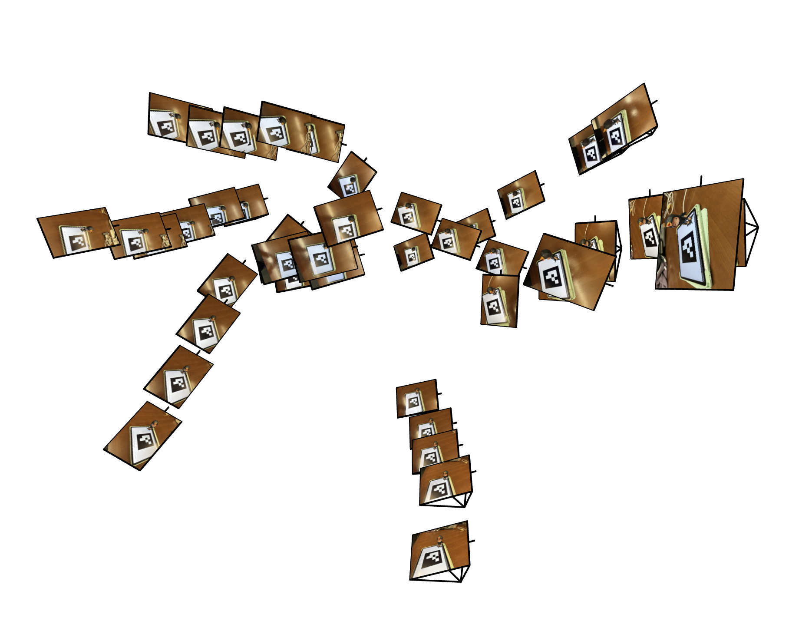 |
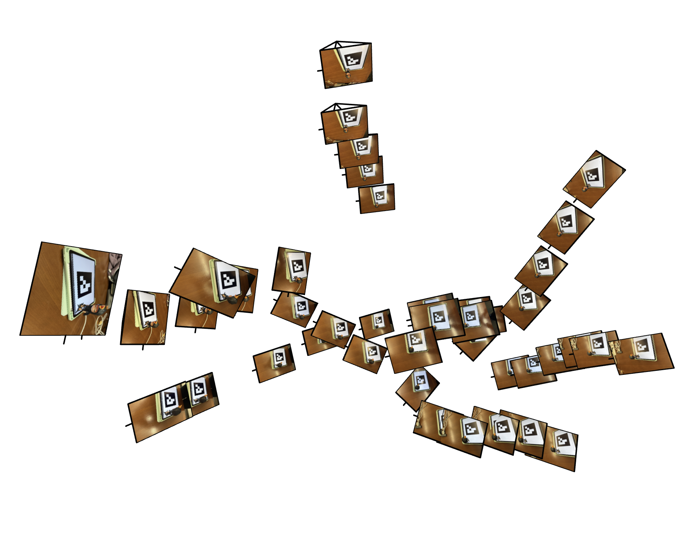 |
Part 0.4: Building a NeRF-Ready Dataset
Finally, I undistorted and downsampled my images and packed everything into a single
hirono_dataset.npz file. The script:
- Loads
calibration_results_aruco.npzandobject_scan_poses.json. - Undistorts each image using
Kand the distortion coefficients. - Downsamples to a smaller resolution (e.g. \(H=75, W=100\)) and rescales \(K\) accordingly.
- Splits images into train / val / test with an 80/10/10 ratio.
Part 1: Fitting a 2D Neural Field
Part 1.1: Coordinate Parameterization and Architecture
Before going 3D, I implemented a 2D neural field that models a single RGB image. Each pixel is represented by its normalized coordinates \((x/W, y/H)\) in \([0,1]^2\).
I pass these 2D coordinates through a sinusoidal positional encoding (SPE) module with
num_freqs = 10. The encoder concatenates the raw coordinates with sine and cosine
features at exponentially increasing frequencies:
For \(x\in\mathbb{R}^2\), \[ \gamma(x) = \big[x,\; \sin(2^0\pi x),\cos(2^0\pi x),\dots, \sin(2^{L-1}\pi x),\cos(2^{L-1}\pi x)\big], \] so the MLP sees both low- and high-frequency information.
The MLP architecture (class MLP) is:
- Input: SPE-encoded 2D coordinate (e.g. 42D when \(L=10\)).
- 3 hidden layers, each
hidden_size = 256with ReLU activations. - Final linear layer to 3 channels, followed by
Sigmoidto keep RGB in \([0,1]\).
Part 1.2: Training
I first trained on my waffle picture, using a dataloader that samples pixel/color pairs and mean squared error as the loss:
\[ \mathcal{L} = \frac{1}{N}\sum_{i}\|\hat{\mathbf{c}}_i - \mathbf{c}_i\|^2,\qquad \text{PSNR} = -10 \log_{10}(\mathcal{L}). \]
Below is the reconstruction progression for run_name = "testimg_nf10_w256" at different iterations:
| Original | Iter 10 | Iter 100 | Iter 500 | Iter 1000 |
|---|---|---|---|---|
|
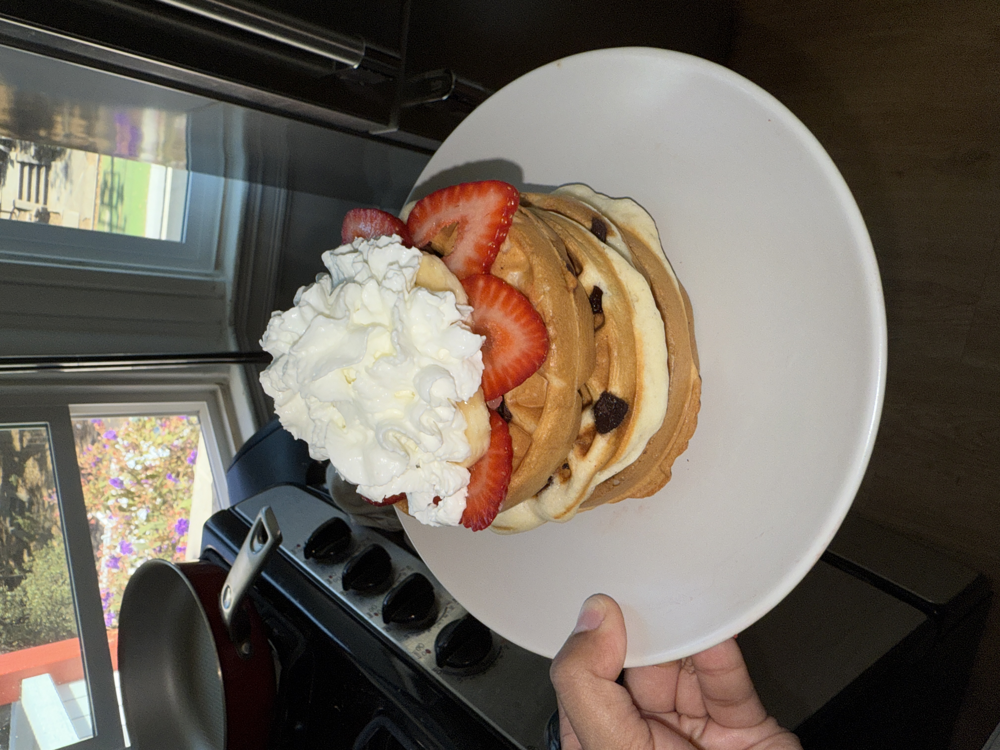 |
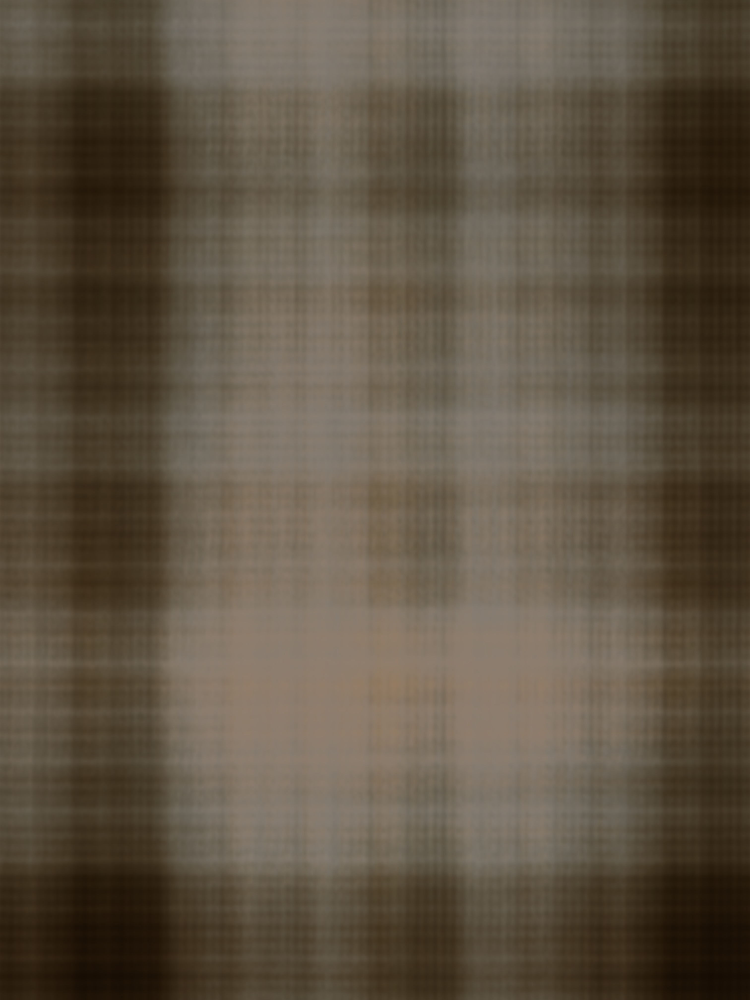 |
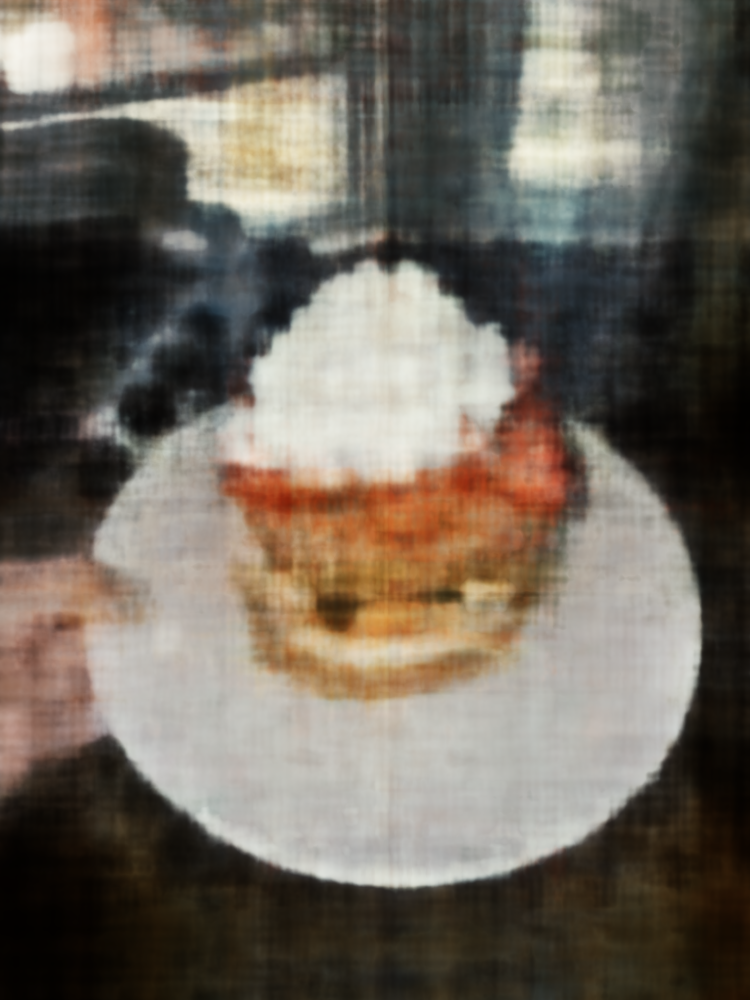 |
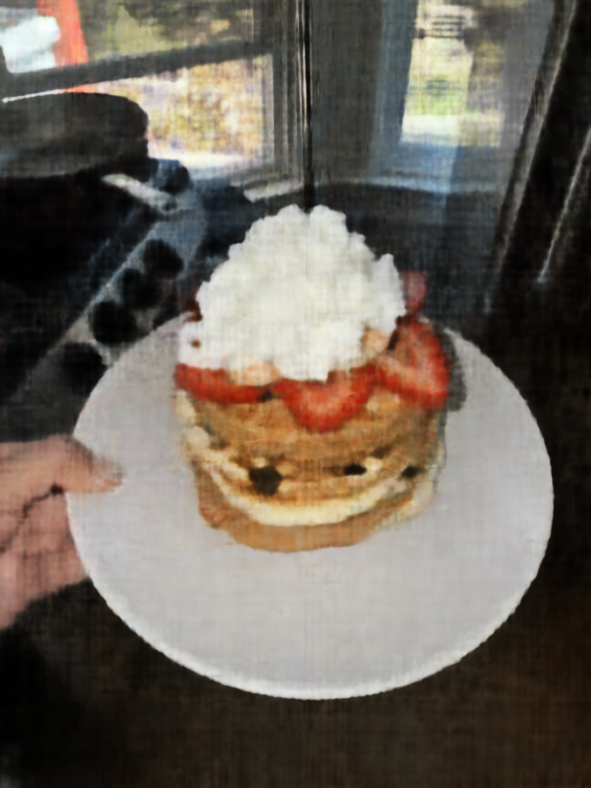 |
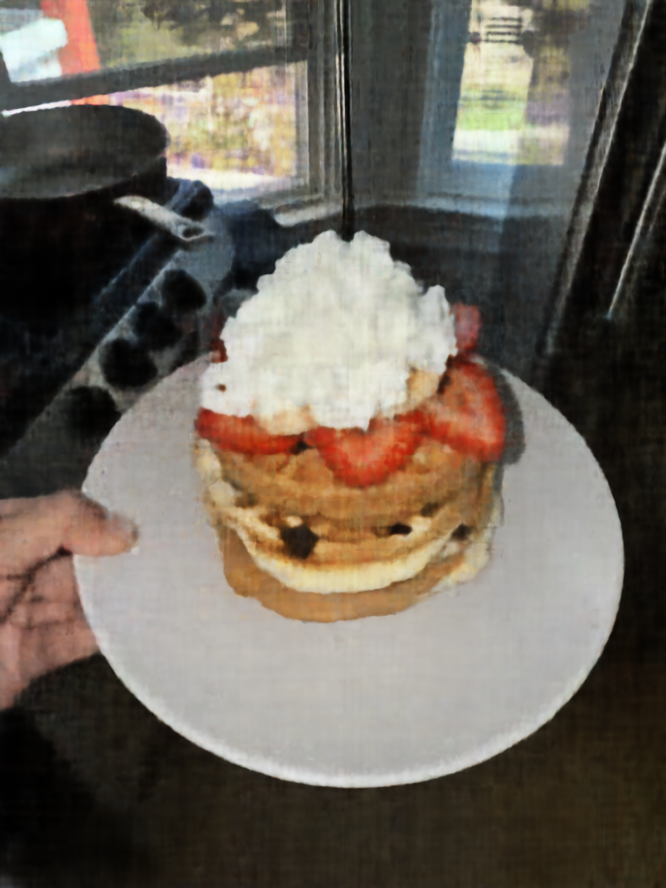 |
The model quickly captures global colors and smooth structures, and then gradually sharpens edges and small textures as training continues.
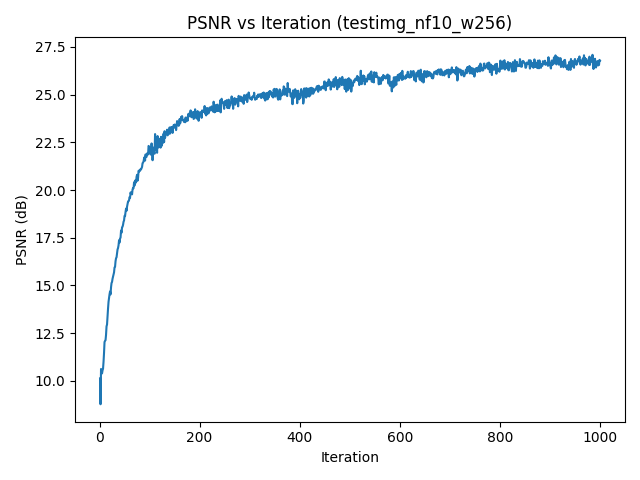
testimg_nf10_w256.Part 1.3: Hyperparameter Effects
I repeated the experiment on the given fox image and ran a small hyperparameter sweep over the number of frequencies and MLP width:
freq_list = [2, 10]width_list = [64, 256]
For each combination, I ran train_on_image_fast for 1000 iterations with
run_name = "fox_nf{nf}_w{w}" and saved final reconstructions
{run_name}_final.png.
| width = 64 | width = 256 | |
|---|---|---|
| freqs = 2 |
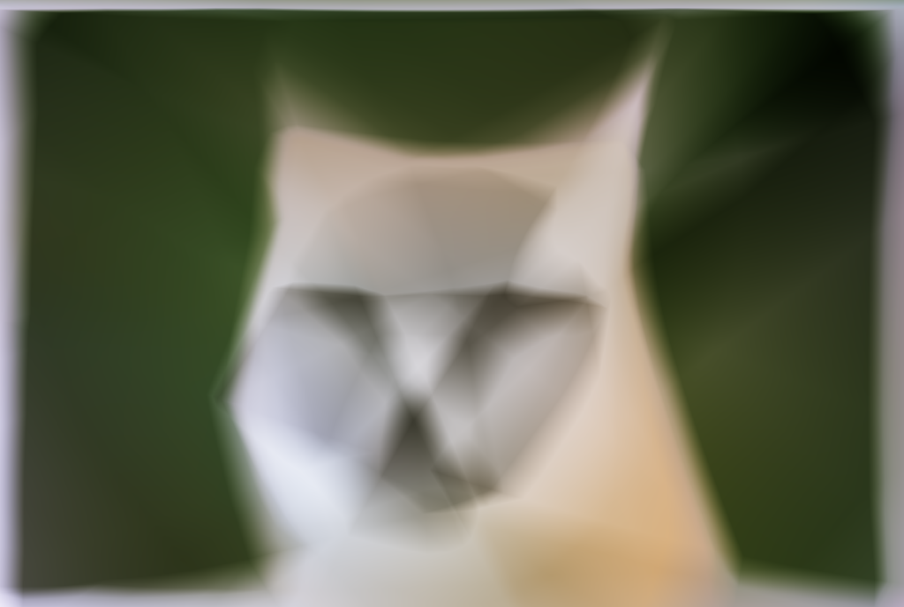 |
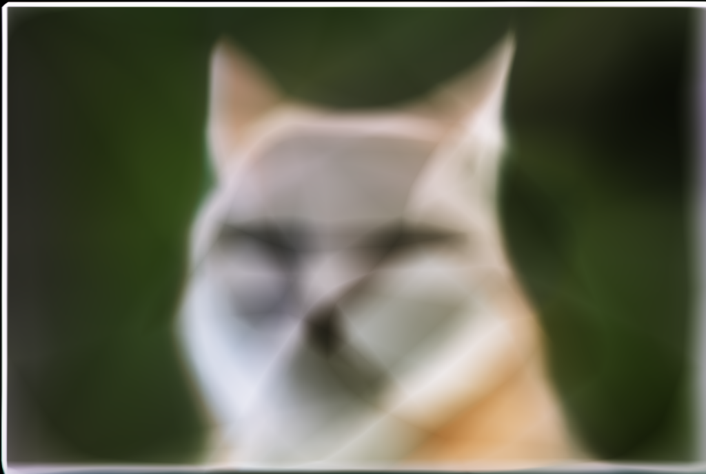 |
| freqs = 10 |
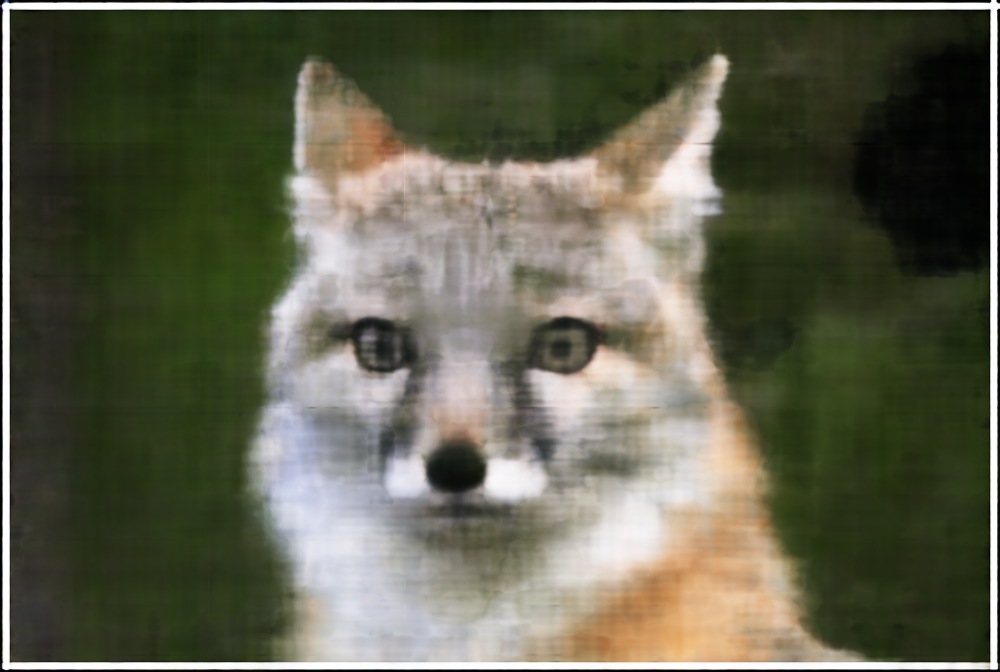 |
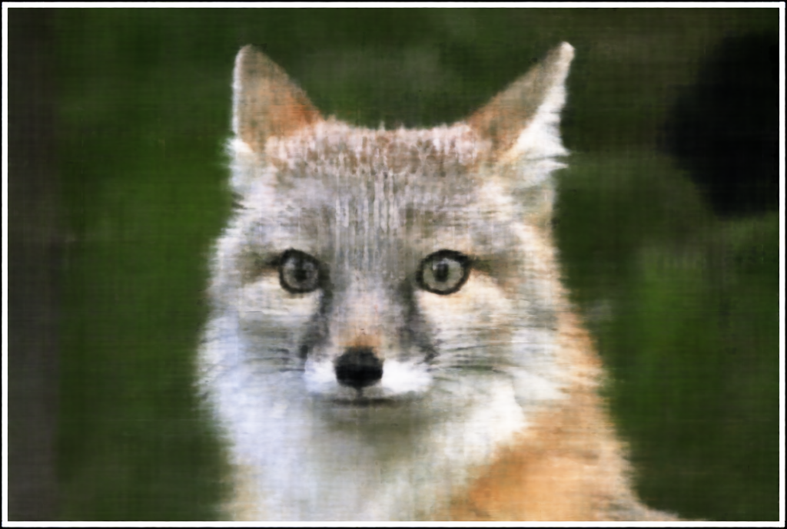 |
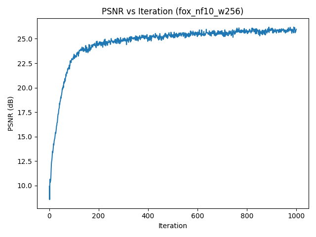
fox_nf10_w256).Increasing the number of frequencies enables sharper edges and finer detail, while a wider MLP improves capacity and reduces artifacts. Too low a frequency budget essentially acts like a strong low-pass filter.
Part 2: NeRF on the Lego Dataset
Part 2.1: From Pixels to Rays
The NeRF part uses the provided lego_200x200.npz dataset. I first load images and
camera poses:
data = np.load("lego_200x200.npz")
images_train = data["images_train"] / 255.0
c2ws_train = data["c2ws_train"]
images_val = data["images_val"] / 255.0
c2ws_val = data["c2ws_val"]
focal = float(data["focal"])
I construct a shared intrinsic matrix
\[
K =
\begin{bmatrix}
f & 0 & W/2 \\
0 & f & H/2 \\
0 & 0 & 1
\end{bmatrix}
\]
and convert pixels to rays with a pixel_to_ray helper:
Given pixel coordinates \((u,v)\), I form normalized camera coordinates \(\mathbf{x}_c = K^{-1}[u,v,1]^\top\), normalize to a direction, and transform from camera to world with \(c2w\). This yields a world-space ray origin \(\mathbf{o}\) and direction \(\mathbf{d}\) for each pixel.
A RaysData class precomputes all rays and flattens them into arrays so I can sample
random subsets during training:
dataset = RaysData(images_train, K, c2ws_train)
rays_o, rays_d, pixels = dataset.sample_rays(batch_size)Part 2.2: Sampling Points and Volume Rendering
Along each ray, I sample a fixed number of points between near and far planes using stratified sampling:
pts, t_vals = sample_points_on_rays(
rays_o, rays_d,
near=2.0, far=6.0,
n_samples=64,
perturb=True
)For each sampled 3D point \(\mathbf{x}\) and viewing direction \(\mathbf{d}\), the NeRF MLP predicts density \(\sigma\) and color \(\mathbf{c}\). I then perform standard alpha compositing along the ray:
\[ C(\mathbf{r}) = \sum_{i} T_i \alpha_i \mathbf{c}_i,\quad T_i = \prod_{j<i}(1 - \alpha_j),\quad \alpha_i = 1 - \exp(-\sigma_i \Delta t_i). \]
The NeRF network (NeRFMLP) uses positional encoding on both positions and directions:
- Position encoding:
PositionalEncoding(in_dims=3, num_freqs=10). - Direction encoding:
PositionalEncoding(in_dims=3, num_freqs=4). - Density branch: several fully-connected layers from encoded position to \(\sigma\).
- Color branch: combines a learned feature vector with encoded direction to predict RGB via
sigmoid.
Rays and Sample Visualization in Viser
To verify my ray generation and sampling code, I visualized up to 100 randomly sampled rays from a single
Lego training image in viser, along with the sampled 3D points and all camera frustums.
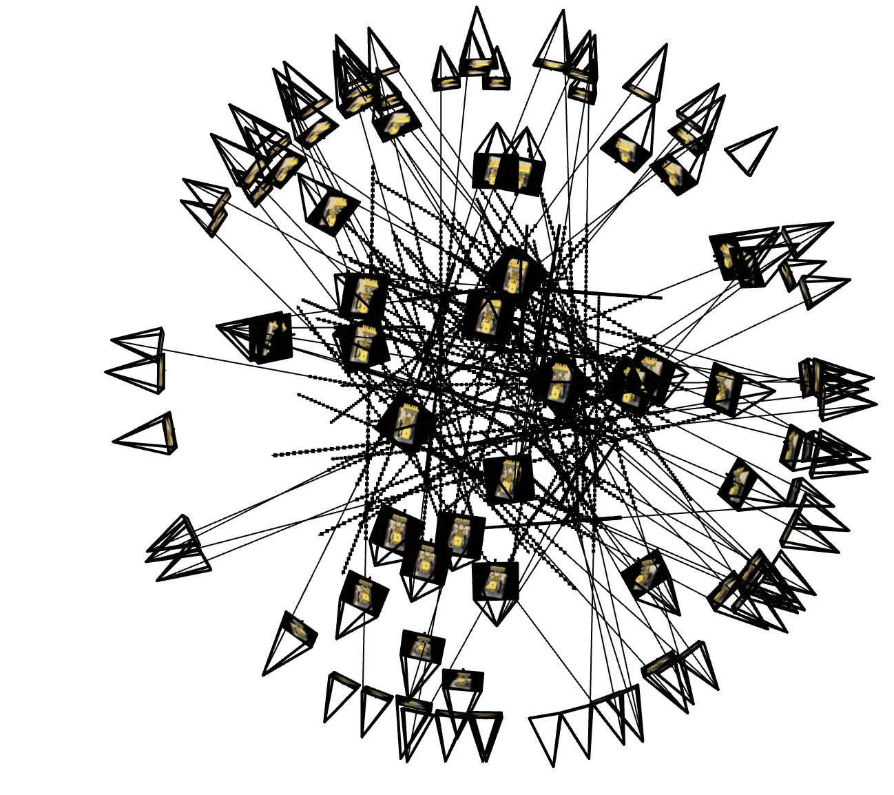
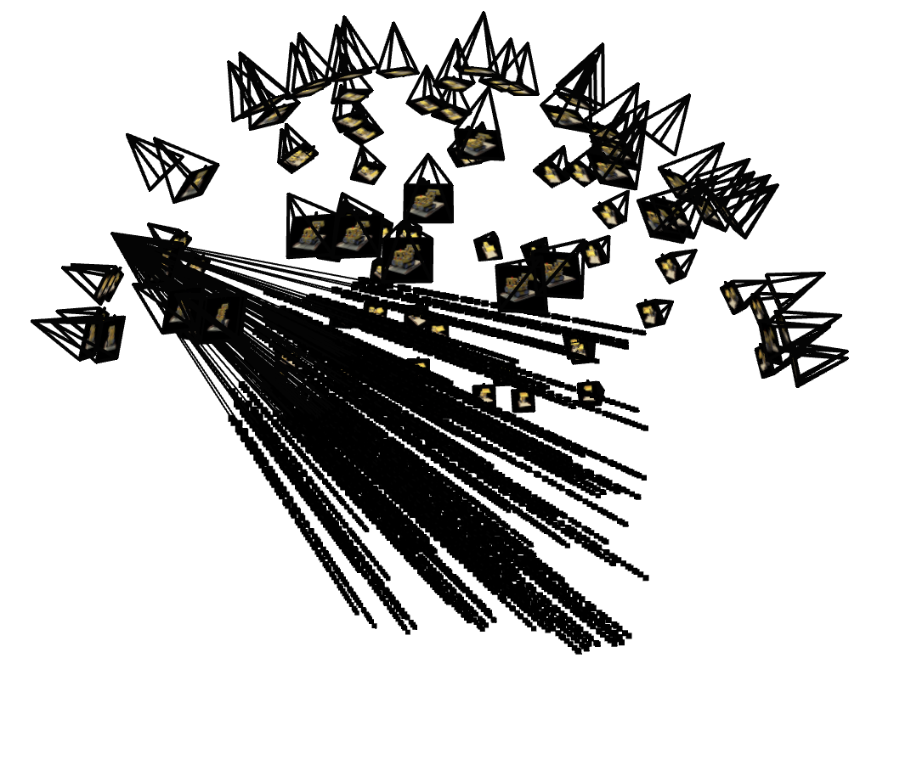
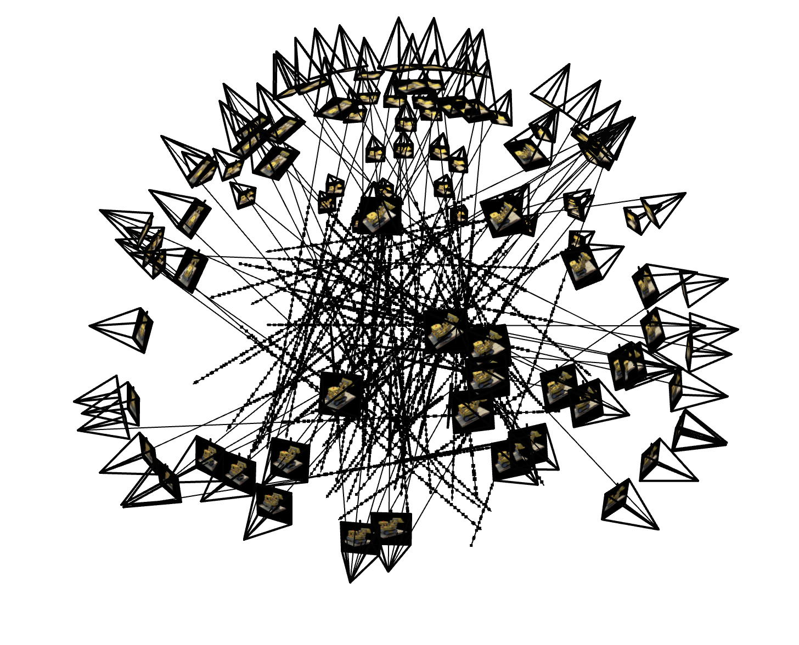
All rays lie inside the expected frustum and samples fall within the [near, far] bounds, which helped catch off-by-one and axis-flip bugs early on.
Part 2.3: Training and Validation
I precompute all training rays with precompute_train_rays_global and then
train with mini-batches:
N_iters = 1000
N_rays_per_step = 10000
near, far = 2.0, 6.0
n_samples = 64
model = NeRFMLP(pos_num_freqs=10, dir_num_freqs=4, hidden_dim=256).to(device)
optimizer = torch.optim.Adam(model.parameters(), lr=5e-4)Every few iterations I render a full training and validation image to monitor visual quality and PSNR.
Lego Training Progression and Validation PSNR
To track convergence, I fixed one validation camera and periodically rendered the predicted image during training, while also logging PSNR on all 10 validation views.
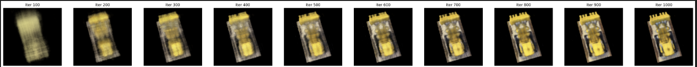
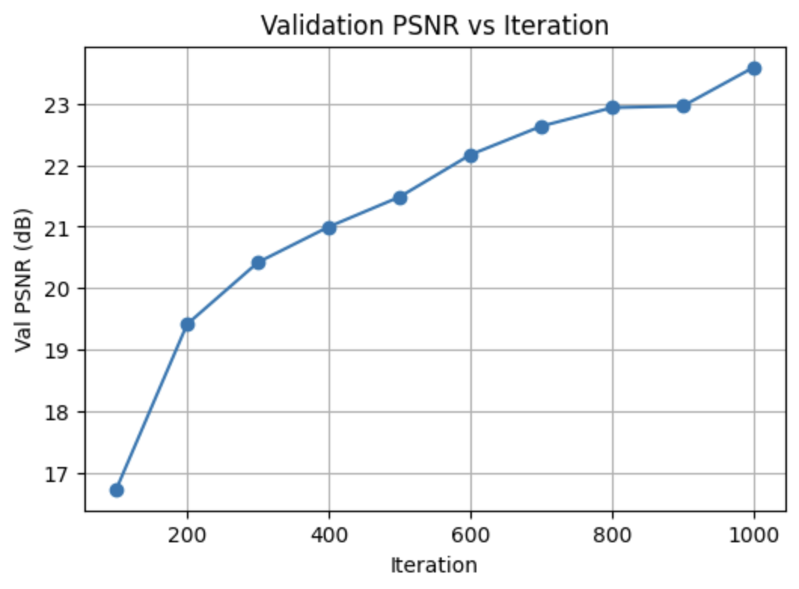
PSNR increases quickly as the network learns coarse geometry and colors, then plateaus once fine details and view-dependent effects are modeled.
Part 2.4: Novel View Synthesis
With the trained Lego NeRF, I render a 360° orbit of views around the object by interpolating camera poses along a spherical path. Frames are saved and written to an MP4.
Part 2.6: NeRF on My Own Captured Object (Training with My Own Data)
Dataset and Rays
For my own object, I load hirono_dataset.npz, which has the same structure as the Lego
dataset but with my images and poses. I reuse the same RaysData and
pixel_to_ray utilities:
data_obj = np.load("hirono_dataset.npz")
images_train = data_obj["images_train"]
c2ws_train = data_obj["c2ws_train"]
K_obj = data_obj["K"]
dataset_obj = RaysData(images_train, K_obj, c2ws_train)
I set near and far planes to tightly bracket my object based on sample rays and then sample
points with sample_points_on_rays just like in the Lego case.
Training, Hyperparameters, and View Reconstruction
I reuse the same NeRFMLP architecture and training loop (learning rate, number of
iterations, and samples per ray) but on my smaller dataset. Compared to Lego, the object occupies
a much narrower depth range, so I experimented with different \([\text{near}, \text{far}]\) intervals
and sample counts before settling on a combination that covered the object while avoiding wasted
samples on empty space.
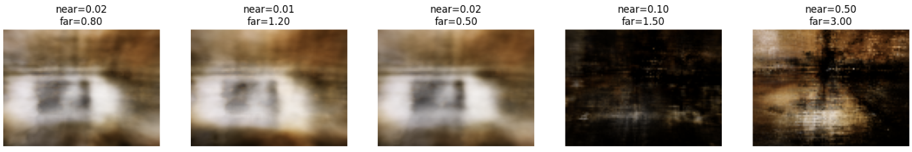
The final configuration keeps the Lego network architecture and optimizer, but uses a tighter depth interval and slightly more samples per ray. This reduces background artifacts while making the network focus capacity on the object itself.
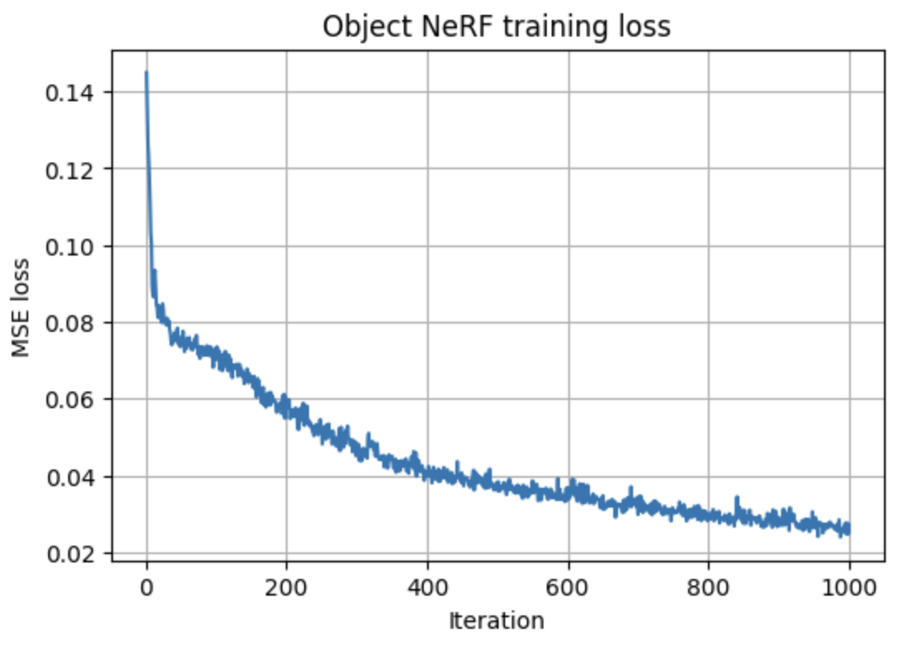
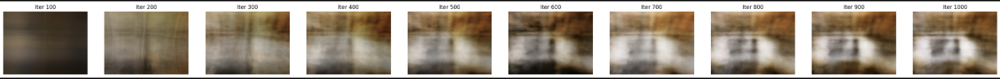
Early iterations capture only a faint silhouette; mid-training renders are recognizable but noisy; later iterations clean up floaters and sharpen edges as the loss curve flattens, indicating convergence.
Orbit Rendering of My Object
Finally, I generate an orbit around my object using a ring of test poses. After rendering each frame with the trained NeRF, I pack them into a GIF:
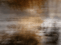